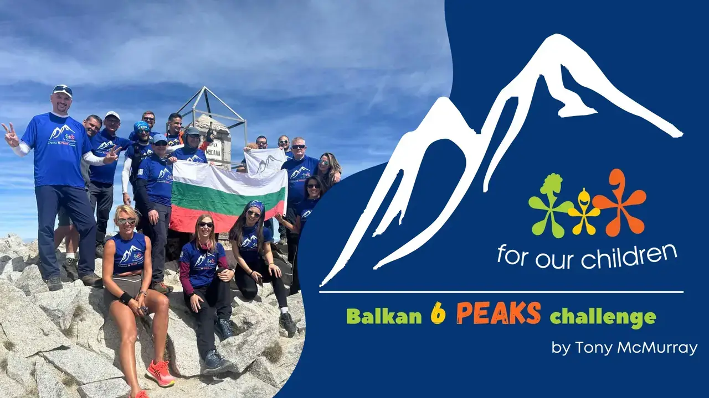

Our Challenges
Progress made through perseverance and dedication to our mission
Progress made through perseverance and dedication to our mission
Our journey is defined by the challenges we undertake and overcome. Below are the key initiatives that drive our mission forward.
All 56 peaks of the Rila and Pirin mountains conquered — 666 km of terrain, 53,300 m of elevation gain, and a summit on Musala, the highest point in the Balkans at 2,925 m.
Climbing the highest peak in each of Bulgaria's five neighbouring countries — Greece, Romania, North Macedonia, Turkey, and Serbia — plus Musala in Bulgaria, the summit that started it all. 3 of 6 peaks reached.
Three countries. Three highest summits. One continuous push — driving between national borders, climbing each summit back to back, in a single day. An endurance classic reimagined as a charity fundraiser.
Bulgaria's answer. Three iconic mountain ranges. Three highest summits. In the same spirit as its international counterpart — a challenge that stays close to home and celebrates the peaks that define this country.
A milestone that defines who we are and what we stand for.
